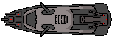

Sobre o projeto
O presente projeto foi desenvolvido para a disciplina de redes de computados, com o objetivo de familiarizar-se com a programação de aplicações de rede utilizando sockets. Onde para esse fim, foi escolhido como aplicação a ser desenvolvida, um jodo de Batalha Naval.

- Membros:
- Miguel C. da Silva - 162575
- Pietro N. Marques - 162574
- Guilherme R. Estrella - 164391
- Otávio A. Flores - 162554